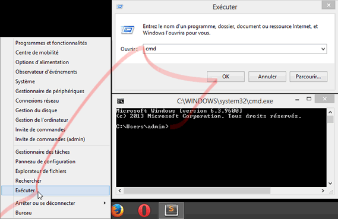
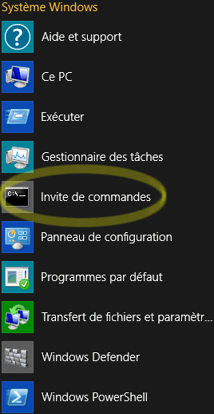
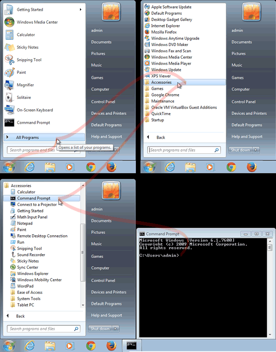
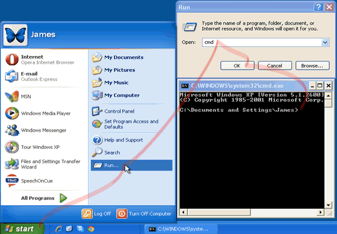
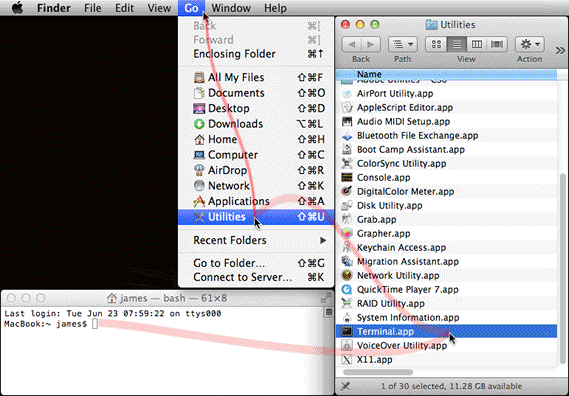

Find the Terminal application on your operating system
Select your operating system below:
Press Windows-R, then type cmd and press Enter, or use your mouse as shown below.
Windows 8

Right click at the bottom left corner of the screen. In the contextual menu, select Run. In the dialog window that opens, type cmd then press ENTER or click on the OK button.
Alternative
Go to the All Applications screen. In the Windows System section to the far right, click or tap on the Command Prompt icon.

Windows 7

In the Start menu, click on All Programs, then Accessories and then Command Prompt.
Windows XP

In the Start menu, select Run. In the dialog window that opens, type cmd then press ENTER or click on the OK button.

Ubuntu

Understanding the Command Line
Command Line Tools
You probably have plenty of experience using a mouse in a point-and-click graphic user interface (GUI). You are used to double-clicking on files to open them, and dragging them from one folder to another, to move them. You are used to opening an application when you want to send an email, edit a photo or listen to music. There is always visual feedback on the screen to tell you, a human, what is happening. Even if it's only an endless progress bar.
And yet, at any given time, there are many applications running on your computer which do not appear anywhere on the screen. These are the command-line tools (CLT).
When you go to a restaurant, you see the waiters who come to your table, with their little notebooks, but you do not normally see the cooks. Without the cooks, however, the restaurant would fail.
When you type a command into a Terminal window, you can imagine that you are talking directly to the cooks that produce all the goodness. The Terminal window is the equivalent of a waiter's notebook.
The operating system itself takes care of some commands, like cd . Other commands need a special chef CLT application to take care of them, so you need to refer to the name of the application first. For example, git --version tells the application git (which has no window that you can see on the screen) to send back information about which version it is.
Particularities of the Terminal application
- Select a chunk of text with your cursor
- Replace that chunk of text by simply typing over it
- Remove the selected text with keyboard shortcut for Cut
- Easily undo and redo your actions
In a word processor, you can also place the text insertion point anywhere you want and type to insert new text.
Terminal applications do not work that way.
In a Terminal application, you cannot cut or replace text, and you must use the arrow keys (rather than the mouse) to place the text insertion point. To delete text, you must place the text insertion point at the end of the text to delete and then use the backspace key to delete the characters one by one.
This may seem awkward to you at first, but it allows you to keep your hands over the keyboard at all times; you never need to reach out sideways for the mouse.
If, regrettably, you enter a command that does something that you did not want to do, your only solution is to enter a new command that explicitly undoes that precise action. It's good to check your command carefully before you press the Enter key.
Copy and Paste in the Windows Command Prompt
The standard keyboard shortcuts like Ctrl-C and Ctrl-Z were introduced by Apple in 1984 and were adopted in Windows applications only much later. The Windows Command Prompt uses an older keyboard shortcut system. In the Windows Command Prompt, you will need to use Alt-Spacebar to show a contextual menu, and then press the letter that appears underlined in the menu item that you want to use.
For example, to select text, you can press Alt-Spacebar then E (for Edit), then M (for Mark). You can now use the arrow keys to move the selection around and extend it. Pressing Enter will copy the highlighted text to your clipboard. Use Alt-Spacebar Edit, Paste to paste your text.